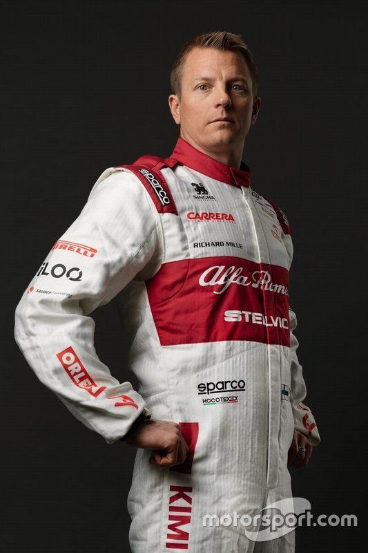
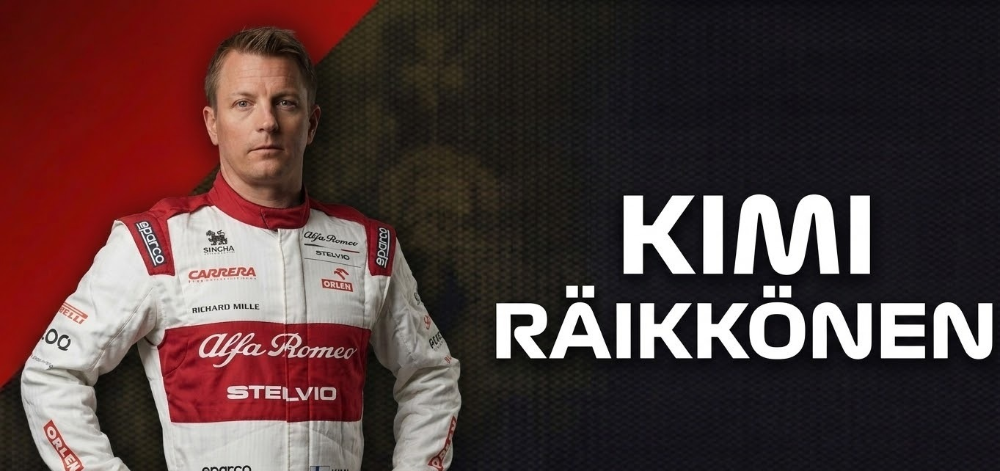
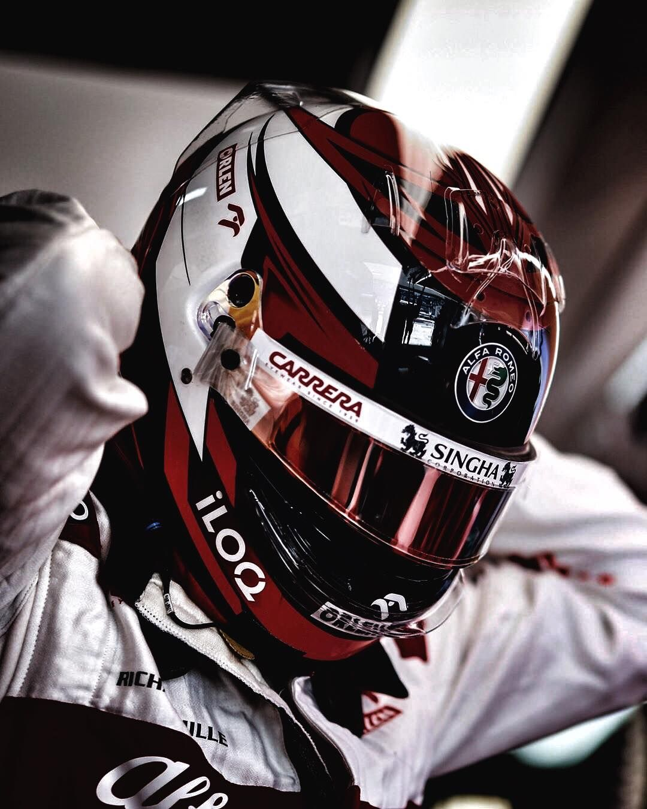
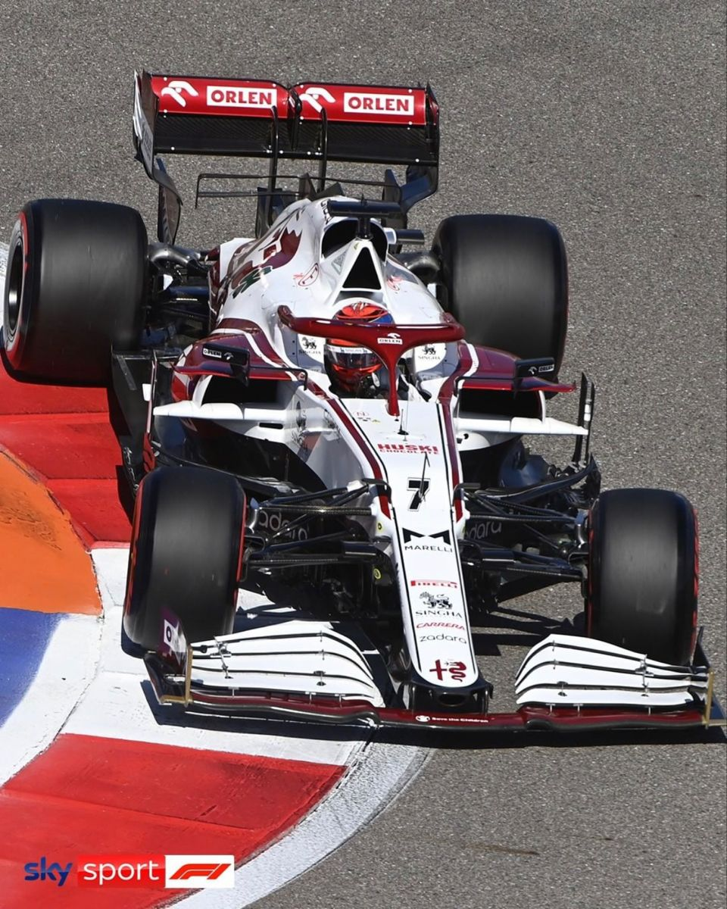

DRIVER PRESENTATION

Legado de Excelencia y Maestría Técnica de Kimi Räikkönen en su Etapa de Consagración
Kimi Räikkönen inició su carrera con un ascenso sin precedentes, saltando casi directamente de la Fórmula Renault a la Fórmula 1 con Sauber en 2001. Su velocidad pura y enfoque pragmático lo llevaron a McLaren y posteriormente a Ferrari, donde alcanzó la gloria máxima al coronarse Campeón Mundial en 2007. Conocido como 'The Iceman' por su inquebrantable resistencia psicológica y precisión técnica bajo presión, Kimi ha sido un referente de longevidad competitiva. En 2021, durante su temporada final con Alfa Romeo Racing, continuó demostrando una lectura de carrera excepcional y una gestión de neumáticos superior que le permitió maximizar resultados en fines de semana complejos. Con 21 victorias y más de 100 podios, Räikkönen deja un legado de integridad competitiva y una comprensión instintiva de la dinámica del monoplaza.

Brasil 2007: En un final de infarto, Kimi se corona campeón con Ferrari por un solo punto de diferencia.

Su último triunfo con Ferrari, demostrando que 'The Iceman' aún tenía la velocidad para vencer a los mejores.
2021: Kimi pone fin a una carrera legendaria de dos décadas, dejando un vacío irremplazable en el paddock.